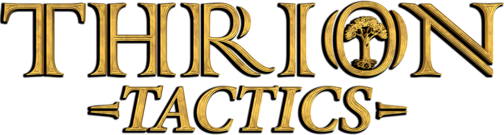
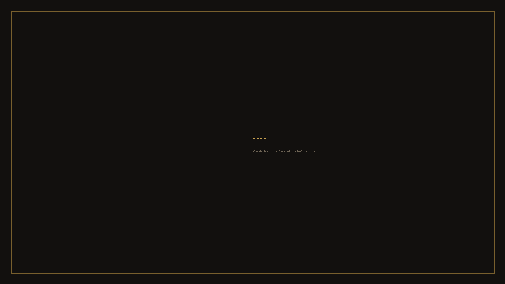
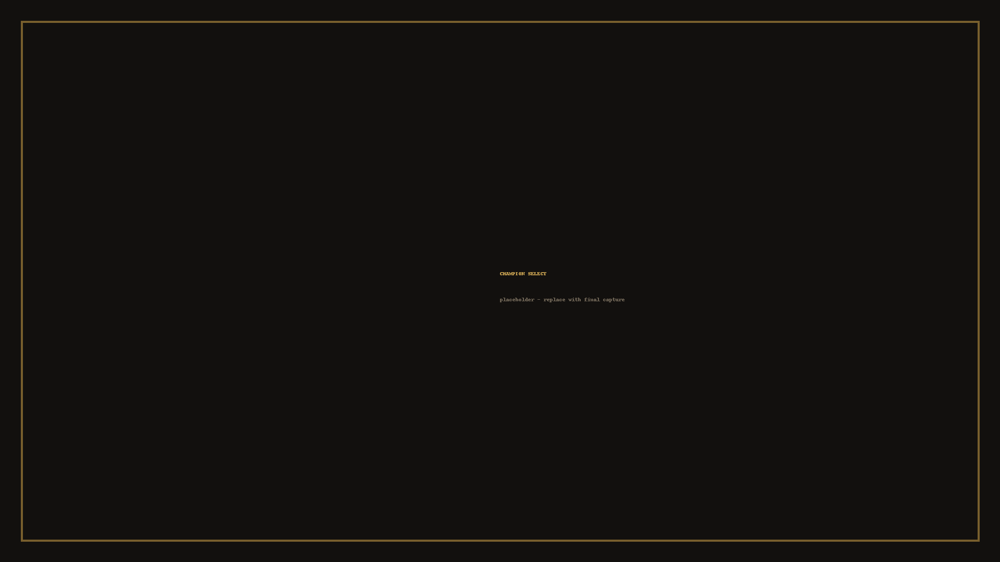
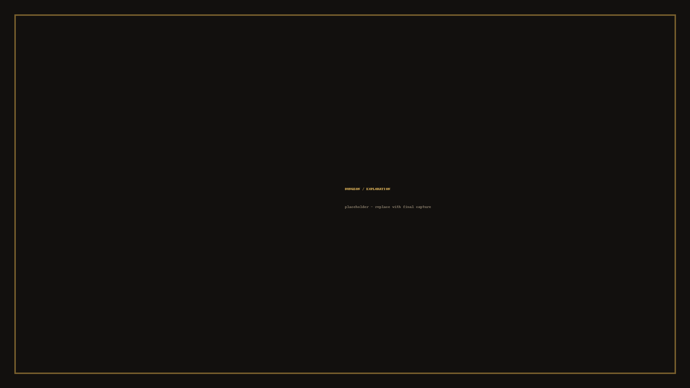
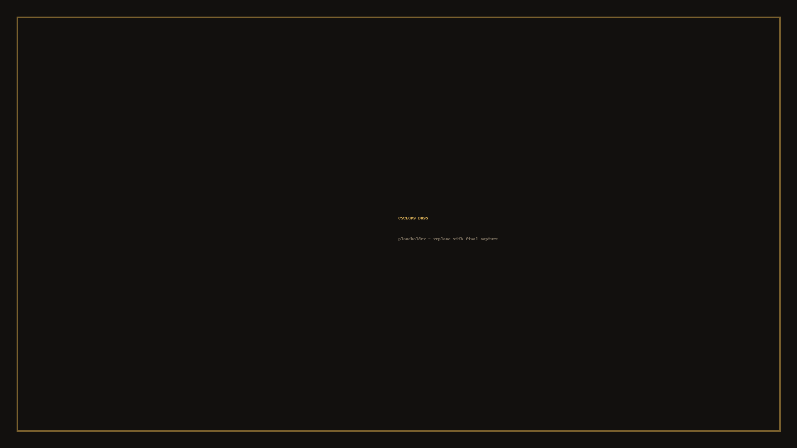

A turn-based tactical dungeon arena where time only moves when you do.
Press kit · Pre-alpha demo · Showing at IGDA Greece Game Developers Meetup #4, Larissa, 31 October 2026
In Thrion Tactics you are a Soulmancer, and the artifact you carry, the Soulcore, lets you command a band of champions through an ancient dungeon. Time freezes between your actions. The creatures down there hold no turns of their own — they move in answer to what you do.
Every champion draws from that same Soulcore, so the pool is shared. An ultimate spent on your first champion is power taken straight out of the next one's turn, and the clock only runs while somebody is actually walking or striking. Thinking costs you nothing. Acting costs you everything.
Before you commit to a swing, a ghost of your champion plays the attack out in front of you and shows what it would hit. You aim, you read the result, and only then do you pay for it. Between fights the dungeon presses back with traps that kill outright, fog that hides the next room, healing pools worth the detour, and a Cyclops that sets its prisoners loose once you hurt it badly enough.
Trials are replayable runs against the dungeon itself, tiered so each one opens only after you clear the last. Arenas set players against each other and against the dungeon at the same time. Play solo and steer two to four champions yourself, or share one PC with up to four players.
Four champions share the same four ability slots: a focused strike, a wide sweep, a signature utility, and an ultimate. What changes is what those slots do.
The Warrior — Tank
Plants a root trap that blocks pathing and bites anything that comes close, then opens a sword aura that punishes everything still standing in reach.
In the demoThe Assassin — Mobility
Drops a shadow marker and dashes to it through bodies, then blinks out, strikes with sharpened focus, and is pulled back to where the blink started.
In the demoThe Fire Knight — Damage
Summons a fire mirror that repeats every strike he makes, doubling his reach across the room while his fire armour holds the line.
The Beast — Brawler
Grows stronger the closer he is to dying, and can turn to stone to reflect blows and pull enemies off his allies.
The demo build shown at events ships with Theros and Umbra Cale. Ignis Eques and the Beast are playable in the full game.
Gameplay video coming shortly.
All images may be reproduced freely in articles, videos and event material covering Thrion Tactics. Credit is appreciated but not required.




Transparent PNG, gold on dark.
Download 2400 px ·
1200 px ·
600 px
Pyles Studio is an independent team based in Greece, building Thrion Tactics in Unity. The game grew out of one question: what would a tactics game feel like if the clock only charged you for acting, never for thinking?
Find the game on Game Jolt.
IGDA Greece — Game Developers Meetup #4, JOIST Innovation Park, Larissa, 31 October 2026.
{kind=link}
{kind=link}
{kind=link}